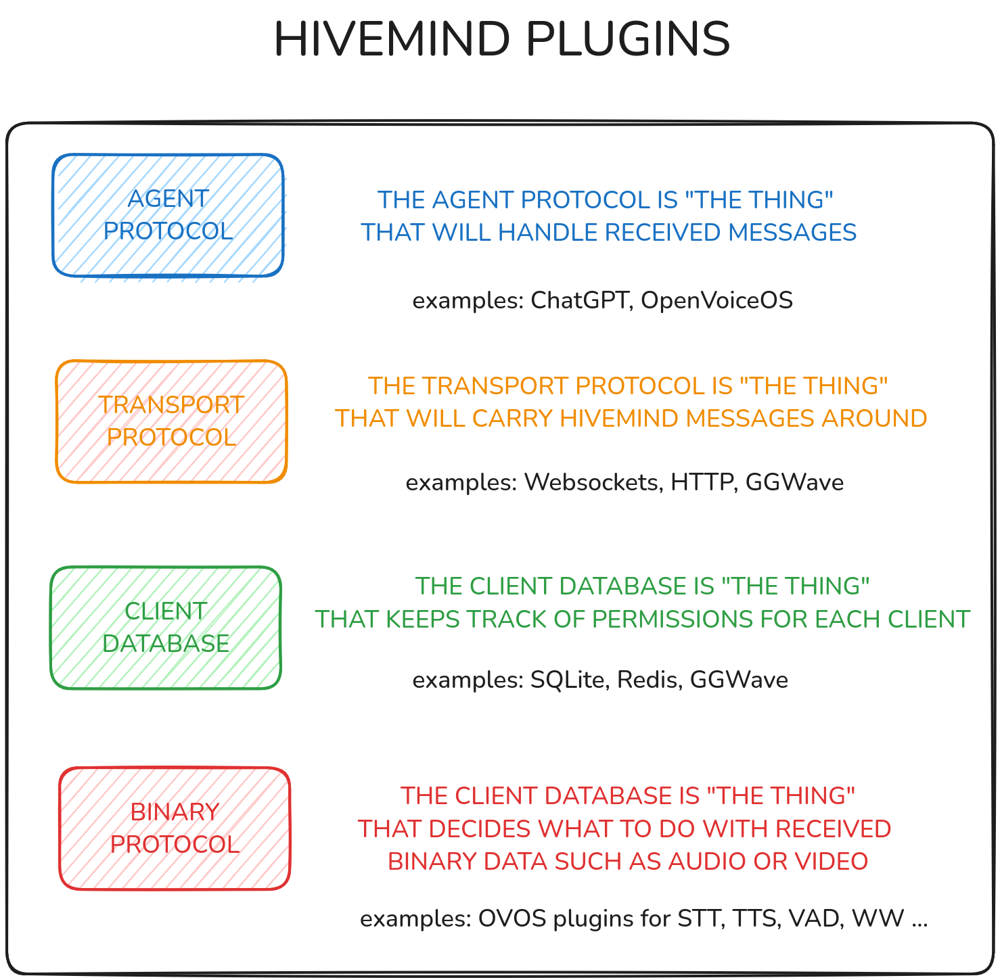

HiveMind Plugin Manager
The HiveMind Plugin Manager (HPM) discovers, manages, and loads plugins within the HiveMind ecosystem. It supports several plugin types: databases, network protocols, agent protocols, and binary data handlers. HPM loads these plugins dynamically, so HiveMind agents can extend their functionality.
Features
- Plugin discovery: find and load plugins of different types, including:
- Database plugins: support various database types, such as JSON, SQLite, and Redis.
- Agent protocol plugins: integrate agent protocols like OVOS and Persona, so HiveMind agents can communicate with each other.
- Network protocol plugins: enable network protocols such as WebSockets for distributed communication.
- Binary data handler plugins: handle binary data communication, such as audio data over HiveMind.
- Plugin loading: load a specific plugin by name, type, or available entry point.
- Factories for plugin instantiation: each plugin type (database, agent protocol, network protocol, binary protocol) has a factory that creates instances based on your configuration.
Plugin types

1. Database plugins
Supports several database systems:
- JSON database: stores data as JSON files.
- SQLite database: uses SQLite for local database storage.
- Redis database: uses Redis for distributed caching and storage.
2. Agent protocol plugins
Supports communication protocols for agents:
- OVOS protocol: for interaction with OVOS-based agents.
- Persona protocol: for interaction with the Persona framework.
3. Network protocol plugins
Enables network communication protocols:
- WebSocket protocol: for real-time, bidirectional communication over WebSockets.
4. Binary data handler protocol plugins
Handles communication of binary data types, such as audio, using specialized protocols.
Developers
This example shows how to discover and load plugins, and how to create instances with the provided factories.
Installation
hivemind-plugin-manager is a dependency of hivemind-core. You typically do not need to install it directly.
pip install hivemind-plugin-manager
Discovering plugins
Use the find_plugins function to discover all available plugins for a specific type:
from hivemind_plugin_manager import find_plugins, HiveMindPluginTypes
# Find all database plugins
database_plugins = find_plugins(HiveMindPluginTypes.DATABASE)
print(database_plugins)
# Find all agent protocol plugins
agent_protocol_plugins = find_plugins(HiveMindPluginTypes.AGENT_PROTOCOL)
print(agent_protocol_plugins)
Creating plugin instances
Each plugin type has a factory class that creates plugin instances with the configuration you provide.
Database plugin factory
from hivemind_plugin_manager import DatabaseFactory
# Create an instance of a database plugin
db_instance = DatabaseFactory.create("hivemind-redis-db-plugin", password="Password1!", host="192.168.1.11", port=6789)
Agent protocol factory
from hivemind_plugin_manager import AgentProtocolFactory
# Create an agent protocol instance
agent_protocol_instance = AgentProtocolFactory.create("hivemind-ovos-agent-plugin")
Network protocol factory
from hivemind_plugin_manager import NetworkProtocolFactory
# Create a network protocol instance
network_protocol_instance = NetworkProtocolFactory.create("hivemind-websocket-plugin")
Binary data handler protocol factory
from hivemind_plugin_manager import BinaryDataHandlerProtocolFactory
# Create a binary data handler protocol instance
binary_data_handler_instance = BinaryDataHandlerProtocolFactory.create("hivemind-audio-binary-protocol-plugin")